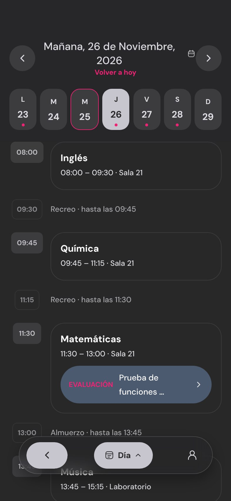
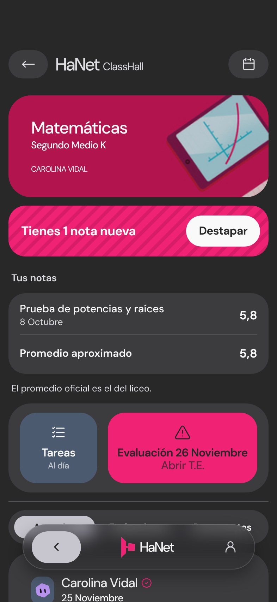
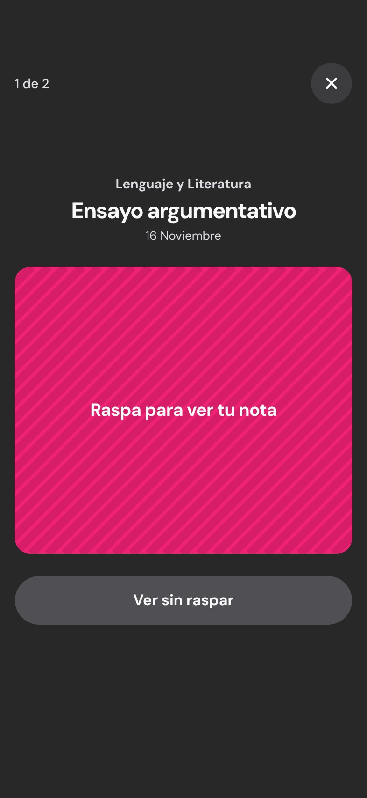

Publica material, evaluaciones y tareas, revisa entregas y entrega notas que tus estudiantes esperan destapar. Todo lo que HaNet hace por ti, en la app y en el panel web.



En esta guía
Empieza aquí2
Notas5
ClassHall: tus clases3
Calendar, horario y eventos6
Evaluaciones y tareas4
Panel web y tu cuenta7
Equipo HaNet · muxp@muxp.art · docs.hanet.muxp.art1 de 7
Guía para docentes
1 Empieza aquí
Entra en tres minutos
Necesitas el código de invitación de tu liceo (cuatro palabras) y acceso a tu correo institucional, el mismo que aparece en la nómina.
1
Crea tu HaNet IDAbre app.hanet.muxp.art (o la app de Android), escribe tu nombre, un nombre de usuario, tu correo y una contraseña, y verifica el correo con el código que te llega.
2
Escribe el código de invitaciónLas cuatro palabras de tu liceo, en el orden en que te las dieron. Te las entrega la administración.
3
Vincula tu correo institucionalHaNet lo busca en la nómina y te envía un link de verificación, que dura 30 minutos. Confirma tus datos con "Sí, son míos".
4
Recibe tu rol de docenteLa administración de tu liceo te lo asigna en el panel web. Desde ese momento puedes crear tus Halls. ¡Y ya estás dentro!
Dónde se hace cada cosa
App (teléfono y navegador)
Lo de cada día: publicar en tus Halls, poner notas, confirmar evaluaciones del Calendar y escanear entradas en la puerta.
Panel web (computador)
Las listas largas: revisar entregas una tras otra, pegar las notas del curso desde una planilla y ver quién no ha entregado.
Abre HaNetapp.hanet.muxp.art
Panel webpanel.hanet.muxp.art
Guía completadocs.hanet.muxp.art
En iPhone, agrega HaNet a la pantalla de inicio desde Safari (Compartir → Agregar a inicio). Así se abre como una app y te llegan las notificaciones.
Equipo HaNet · muxp@muxp.art · docs.hanet.muxp.art2 de 7
Guía para docentes
2 ClassHall
Un Hall para cada clase
Cada asignatura de un curso es un Hall. Ahí publicas anuncios, material, evaluaciones y tareas, y tus estudiantes lo tienen todo en el mismo lugar.
AppPanel web
Crea tu Hall
1
En ClassHall, toca "Crear un Hall".
2
Elige la asignatura, el tipo, el curso principal y una portada.
3
Si es electivo o dominio, comparte con tus estudiantes el código de 6 caracteres que aparece dentro del Hall.
Tipo
Para qué
Quiénes entran
Plan común
Formación general
Todo el curso, sin código
Electivo
Formación general electiva de 3° y 4° medio
Estudiantes de varios cursos, con código
Dominio
Plan diferenciado, asignaturas de profundización
Estudiantes de varios cursos, con código
Un Hall, como lo ve tu estudiante.
Anuncios
Mensajes para toda la clase, con un archivo adjunto si hace falta. A tus estudiantes les llega una notificación.
Material
Guías, presentaciones y lecturas. Solo las abren quienes están en tu Hall.
Lo que publicas es tuyo. La directiva del curso no puede modificarlo. Más tarde puedes cambiar la asignatura o la portada del Hall sin perder estudiantes, anuncios ni evaluaciones.
Equipo HaNet · muxp@muxp.art · docs.hanet.muxp.art3 de 7
Guía para docentes
3 Evaluaciones y tareas
Que nadie se pierda una prueba
Cada evaluación y cada tarea que publicas aparece sola en el Calendar del curso, con avisos para tus estudiantes antes de la fecha.
Evaluaciones con su tabla de especificaciones
Escanear T.E.
Sube tu tabla de especificaciones en PDF, Word o una foto, y HaNet llena el formulario por ti: objetivos, habilidades, contenidos y puntajes. Revisas y guardas.
Directo al Calendar
La evaluación aparece en el Calendar del curso, o de cada curso de tus estudiantes si es electivo o dominio. Ellos reciben avisos 24 y 4 horas antes en la app instalada.
Tareas con entregas
1
Publica la tareaCon su fecha de entrega, y elige si aceptas entregas atrasadas. Aparece en el Calendar como "Tarea".
2
Tus estudiantes entreganHasta 6 archivos, fotos o links, con un comentario. Cada entrega la ven solo su autor y tú.
3
Revisa y comentaMarca cada entrega como revisada, con un comentario. Al estudiante le llega un aviso. Las notas van en las evaluaciones, no en las tareas.
Lo que reciben tus estudiantes
Aviso
Cuándo
Anuncio, tarea o material nuevo
Apenas lo publicas.
Recordatorio de entrega
A las 18:00 del día antes, solo a quienes todavía no entregan.
Entrega revisada
Cuando la marcas como revisada.
Prueba en camino
24 y 4 horas antes, en la app instalada.
Equipo HaNet · muxp@muxp.art · docs.hanet.muxp.art4 de 7
Guía para docentes
4 Notas
Entrega notas que se esperan
Mantén a tus estudiantes informados de sus calificaciones. El aviso nunca muestra la nota: cada estudiante la destapa en pantalla completa, raspándola con el dedo.
Si tu liceo activa NotasAppPanel web
Pon y publica las notas
1
Abre la evaluaciónEn tu Hall, entra a la sección Notas de esa evaluación.
2
Escribe cada notaDe 1,0 a 7,0 con un decimal. Para ir rápido, escribe "62" y queda 6,2.
3
Revisa el borradorMientras no publiques, nadie más las ve.
4
PublicaA cada estudiante le llega su aviso para destaparla.
¿Te equivocaste?
Corrige la nota y guarda. Se publica al instante y al estudiante le llega un aviso de nota corregida.
Todo el curso de una vez
En el panel web, pega las notas desde tu planilla de Excel o Google Sheets.
Cada evaluación puede llevar una ponderación opcional, que se usa en el promedio aproximado que ve el estudiante.
Así la recibe tu estudiante.
El promedio oficial sigue siendo el del liceo. El estudiante ve un promedio aproximado por semestre y anual. Una nota la ven solo el estudiante, tú y la administración del liceo. HaNet no reemplaza el libro de clases: eso llega después de la beta.
Equipo HaNet · muxp@muxp.art · docs.hanet.muxp.art5 de 7
Guía para docentes
5 Calendar, horario y eventos
Lo oficial lleva tu sello
El Calendar es la agenda de cada curso. La directiva de estudiantes también agenda ahí, y tú decides qué es oficial.
Confirma lo que agenda el curso
Cuando la directiva agenda una evaluación de tu asignatura, la ves en tu Hall. Puedes confirmarla, corregirla o borrarla. Al guardarla pasa a tu Hall y lleva el sello de verificado por un docente, para que el curso sepa que es oficial.
Horario de electivos y dominios
El horario del plan común lo arman la directiva del curso y la administración. Los bloques de tu electivo o dominio los defines tú, dentro de tu Hall, y cada estudiante los ve sumados a su semana.
Días sin clases
Si la administración suspende clases o adelanta la salida, las evaluaciones de esas horas pasan solas a la siguiente clase de tu asignatura. Las tareas mantienen su fecha.
El día del curso, con las pruebas dentro de cada clase.
Escanea en la puerta
En una gala o velada con entradas, quien organiza puede autorizarte para escanear. Ese día verás "Hoy escaneas" en tu Inicio, con el conteo de llegadas en vivo.
Compartir a HaNet
Con la app de Android, comparte una T.E. o un documento desde Archivos, Drive, el correo o WhatsApp. Eliges el Hall y HaNet lo recibe.
Equipo HaNet · muxp@muxp.art · docs.hanet.muxp.art6 de 7
Guía para docentes
6 Panel web y tu cuenta
Para el trabajo de escritorio
En panel.hanet.muxp.art entras con tu misma cuenta de HaNet. Úsalo cuando tengas muchas entregas o un curso completo de notas.
Mis Halls
Anuncios, material, tareas y evaluaciones con su T.E., con la tabla al lado de los objetivos.
Notas
Pega las notas del curso desde una planilla, revísalas como borrador y publícalas.
Por revisar
Todas las entregas pendientes de tus Halls, una tras otra, y quién todavía no entrega.
Entrar con segundo paso
Después de tu contraseña, el panel siempre pide confirmar que eres tú. Así, una contraseña filtrada no basta para abrir los datos del liceo. El navegador queda confirmado por 7 días.
Código por correo
Llega un código de 6 dígitos al correo de tu cuenta. Vence en 10 minutos.
App de autenticación
Google Authenticator, Microsoft Authenticator u otra similar. Se activa en la página Seguridad del panel.
Código de respaldo
Uno de los 10 códigos de un solo uso que recibes al activar la app. Guárdalos bien.
Tu cuenta, protegida
Si alguien entra desde un dispositivo nuevo o cambia tu contraseña, te llega una alerta. En Configuraciones → Cuenta → Seguridad ves dónde está abierta tu cuenta y puedes cerrar sesión en todas partes.
Avisos del liceo
La administración puede enviarte avisos desde Organizar, y quedan guardados en tus Notificaciones, al final del Inicio. ClassHall no te envía notificaciones a ti.
¿Tienes ideas, dudas o encontraste algún error? ¡Escríbenos a muxp@muxp.art! La guía completa de cada módulo está en docs.hanet.muxp.art, y el estado de HaNet en status.hanet.muxp.art.
Equipo HaNet · muxp@muxp.art · docs.hanet.muxp.art7 de 7